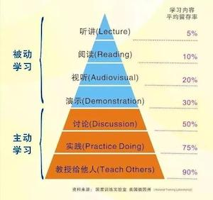

FAQ - I. 科研方法
Tips
- 研究生生存指南 A grad school survival guide
- Want to get great at something? Get a coach ! TED (16:36) Bilibili (2:50)
1) 科研中建议养成哪些好的习惯？
"What sculpture is to a block of marble, education is to a human soul." - Joseph Addison
“The carving and chipping away to create a masterpiece take years of dedication.
Teachers help students discover their interests, passions, and ultimately themselves.”
育人的目的应该是帮助学生培养好的习惯重于追求成果的大小，好的习惯包括：
- 自强不息（有上进心不懒散，止于至善）
- 厚德载物（对他人的尊重和善意）
- 作息规律且有效率（see detail)
- 勤于阅读、勤于思考 （Stay Hungry & Think Different）
- 经常锻炼身体
- … …
实操建议：
- 对于重要而不紧急的事情，多用 email 少用微信 （see detail)
- 做事要提前（比如请假、比如完成任务） (see detail)
- "研究“ 为主 "学习“为辅 (see detail )
- 带上“纸”和“笔” (手写笔记有益学习 – 《环球科学》 2024.5. 认知科学)
- 高级冥想 可能会激发人们的灵感，并为如何实现生命的意义提供深刻的见解和清晰的思路。– 《环球科学》 2024.9.
2) 如何学习新知识和新技能？
听、读、视听、演示都属于被动的学习；讨论、实践、教授别人是主动学习。 其中教授给他人留存率最高，达到90%。 这一步是费曼学习法的精髓，也就是“以教促学”。所以senior students mentor junior students不仅是一种团队合作和领导力的培养，也是对自己知识的巩固。

3) 如何成为一个好的研究生和科研工作者？
"Tell me and I forget. Teach me and I remember. Involve me and I learn." - Benjamin Franklin
做好从本科生到研究生的角色转变，不能只知道“学习”，要侧重“研究”。
- 科研生涯的四戒律
- 1. 边干边学，不要彷徨；
- 2. 勇于创新，敢于挑战；
- 3. 忍受寂寞，注重过程；
- 4. 掌握历史，树立信心。
- 十准则
- 1. Craft good questions
- 2. Ask for help
- 3. Respect and appreciate your lab mates
- 4. Have at least two projects
- 5. Sleep on it
- 6. If you need guidance from your mentor, set up a meeting
- 7. Learn when to be obsessive
- 8. Start with the task you are least excited about, and do it right away
- 9. Balance bouts of focused work with short breaks
- 10. Get organized
- 耶鲁大学的心态理念（对于心态方面的七个建议） （视频链接： 优酷 | 腾讯 | 抖音@清华云）
- 1. 要无条件自信，即使在做错的时候；
- 2. 不要想太多，定时清除消极思想；
- 3. 学会忘记痛苦，为阳光记忆腾出空间；
- 4. 敢于尝试，不怕丢脸；
- 5. 每天都是新的，烦恼痛苦不过夜；
- 6. 面对别人的优秀，发自内心赞美；
- 7. 做人最高境界不是一味低调，也不是一味张扬，而是始终如一的不卑不亢
- See More
- 科研生涯的四戒律和十准则
- 好导师的 16 个标准
- 如何成为导师眼中的好学生？如何成为学生眼中的好导师？
4) 如何才能高效率地完成不喜欢的工作或学习任务？
"绝招只有一个：不要过度准备，先随便开个头。
人的大脑很奇怪，工作的压力越大，大脑越会找借口去拖延。有时候大脑告诉你，这么难的工作，还是上网查一下资料吧，还是找找相似案例吧，你会误以为自己在做必要准备，其实是大脑在帮你逃避压力。你信了它的，就会把时间浪费到刷网页上，随着期限越来越近，你就越来越紧张，反而会更加拖延。
很多人给自己打气的方式是告诉自己这项工作非常重要，一定要认真对待。这么做，一定会起反作用的！你要相信，人从来都不是理性驱动的生物，与其依赖自己的意志力，不如顺应自己的天性。人的天性是什么？追求安逸和轻松啊。多数人都有拖延症，但我没见过一个玩游戏，吃好吃的拖延的！我们要顺应天性，就不要把工作想得那么沉重。做不到像对待游戏机那样喜爱工作，也一定要控制自己，不要把思维聚焦到压力上，而是要轻视它。
你就这么想，我先随便开个头再说吧。其实一起头你就会发现，根本不像你想的那么痛苦，很多时候你开了个头就刹不住了，不知不觉就做完了。"
作者：@苍泠